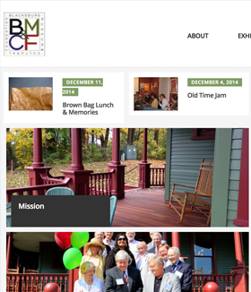
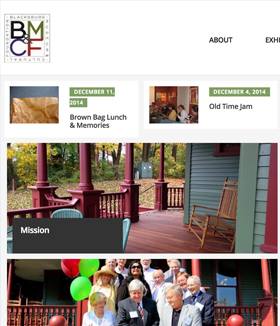
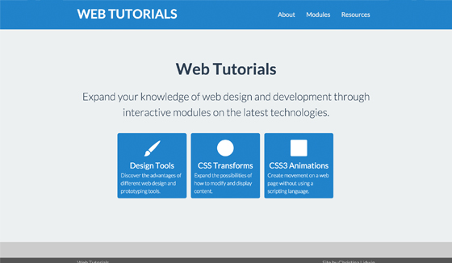

Semester Highlights
Thesis Committee Meeting #1
Christina Lidwin
December 11, 2014
Summer in Seattle
- Internship in Kirkland with Google Hangouts
- Applications for two full-time positions
- Exploring the Northwest
Internship Experience
Third team, product area, home office
- User Privacy (Back-end)
- Hangouts video calls (Front-end)
- Girls Who Code Mentor
Conversion Process
Five Technical Interviews in Two Offices
- Software Engineering
- User Experience
Advice and Mentorship
Anton (fireupman), Hangouts Designer
- Learn Sketch for prototyping
- Focus on micro-animations
- Process-based portfolio
Fall 2014 Courses
- Functional Animations (Independent Study)
- Human-Centered Methods
- Human-Centered Design
- Web Tutorials (Independent Study)
- Processing
Functional Animations
How can two elements relate to each other?
Human-Centered Methods
User Interfaces + Motion Graphics = Highly Interactive Graphics
- What does design mean (to me)?
- What sorts of interfaces most capture my attention?
- Where do motion graphics get applied in this area?
Human-Centered Design
Designing user interfaces (using web technologies)
 

Web Tutorials
Interactive modules on web technologies.
Processing
Representing everyday information in different ways.


Outside the Classroom
Conferences, Books, and Articles
Conferences
- How Interactive Design Conference (DC)
- "Technology is a science, but getting people to use it is an art" - Mike Arauz
- "Every habit is an entry point into another habit" - David Sherwin
- "Information architecture is about having a vision and creating a taxonomy for it" - Andy Fitzgerald
- Grace Hopper Women in Computing Conference (Phoenix)
Books
- Enchanted Objects
- Seven Abilities of Enchanted Objects are glanceability, gestureability, affordability, wearability, indestructability, usability, loveability
- "Always design a thing by considering its next-larger context" - Eliel Saarinen
- the functional art
- "Visualization should be seen as a technology" (19)
- "Technologies are extensions of ourselves and means to reach a goal" (19,22)
- "Think of an interface as a mediator between users and a goal" (192)
- Intertwingled
- "Information architecture becomes ecosystems." (32)
Articles
- Rise of Data Artists
- "consider the Data Designer a hybrid of two existing disciplines:" data analytics and interaction design
- The Interface Layer: Where Design Commoditizes Tech
- "Companies that successfully aggregate multiple services in a single interface have a chance of really shaking up industries"
- Google’s New Smartwatch Faces Look Beyond Time-Telling
- "The interesting thing about time is that everyone experiences it differently."
Global State
Set data-state="something" on a slide and "something"
will be added as a class to the document element when the slide is open. This lets you
apply broader style changes, like switching the background.
Custom Events
Additionally custom events can be triggered on a per slide basis by binding to the data-state name.
Reveal.addEventListener( 'customevent', function() {
console.log( '"customevent" has fired' );
} );
Slide Backgrounds
Set data-background="#007777" on a slide to change the full page background to the given color. All CSS color formats are supported.
Image Backgrounds
<section data-background="image.png">Repeated Image Backgrounds
<section data-background="image.png" data-background-repeat="repeat" data-background-size="100px">Background Transitions
Pass reveal.js the backgroundTransition: 'slide' config argument to make backgrounds slide rather than fade.
Background Transition Override
You can override background transitions per slide by using data-background-transition="slide".
Clever Quotes
These guys come in two forms, inline:
“The nice thing about standards is that there are so many to choose from”
and block:
“For years there has been a theory that millions of monkeys typing at random on millions of typewriters would reproduce the entire works of Shakespeare. The Internet has proven this theory to be untrue.”
Pretty Code
function linkify( selector ) {
if( supports3DTransforms ) {
var nodes = document.querySelectorAll( selector );
for( var i = 0, len = nodes.length; i < len; i++ ) {
var node = nodes[i];
if( !node.className ) {
node.className += ' roll';
}
}
}
}
Courtesy of highlight.js.
Intergalactic Interconnections
You can link between slides internally, like this.
Fragmented Views
Hit the next arrow...
... to step through ...
any type- of view
- fragments
Fragment Styles
There's a few styles of fragments, like:
grow
shrink
roll-in
fade-out
highlight-red
highlight-green
highlight-blue
current-visible
highlight-current-blue
Spectacular image!

Export to PDF
Presentations can be exported to PDF, below is an example that's been uploaded to SlideShare.
Take a Moment
Press b or period on your keyboard to enter the 'paused' mode. This mode is helpful when you want to take distracting slides off the screen during a presentation.